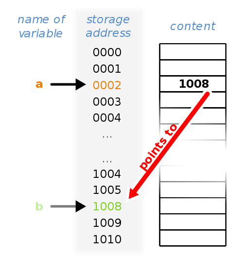
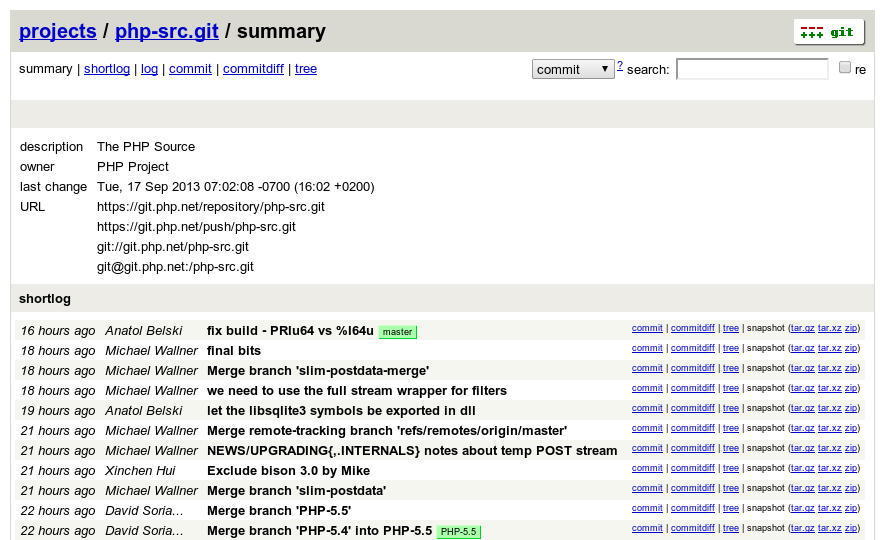

Inside the Sausage Factory
A Journey from PHP to C
Jeremy Mikola
jmikola
I work with these guys
At this place

I've done a bit of this
- TI-83 Basic
- Perl
- PHP
- JavaScript
- C++
- Delphi
- Java
- Scheme
- C
- Assembly
- Ada95
- Python
But let's talk about
- TI-83 Basic
- Perl
- PHP
- JavaScript
- C++
- Delphi
- Java
- Scheme
- C
- Assembly
- Ada95
- Python
More specifically…
- Finding C in PHP
- A crash course in C
- PHP internals
- Creating extensions
Compiling
C → Preprocessor → Translation Unit
Translation Unit → Compiler → Object File
Object Files → Linker → Executable

Pointers ☞ Memory
php-internals
php-src

It looks like you're giving a presentation on PHP internals. Would you like help?

Macros
Macros Everywhere